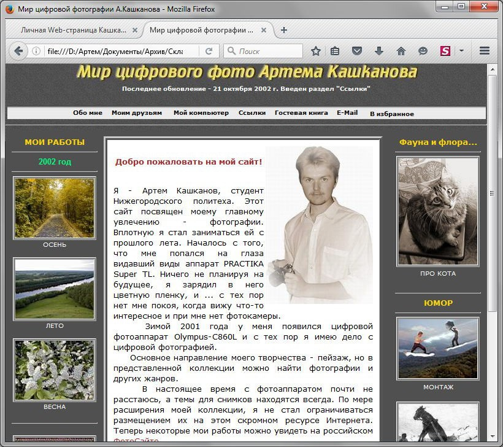
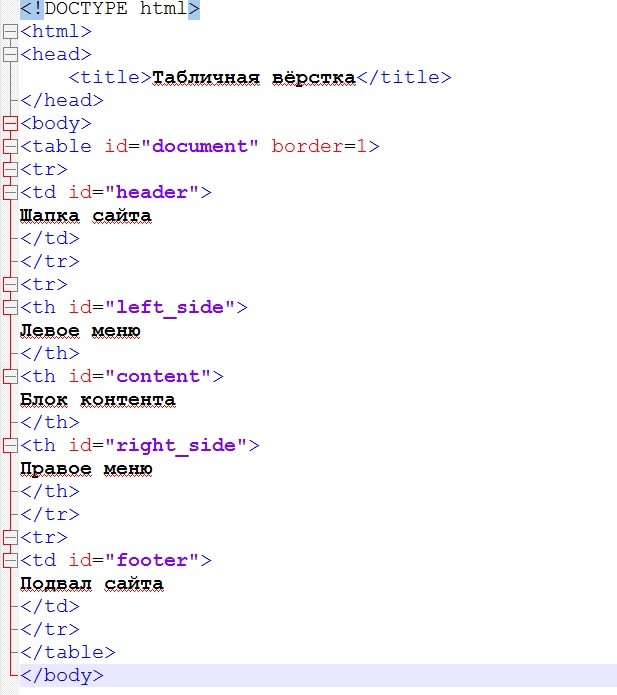
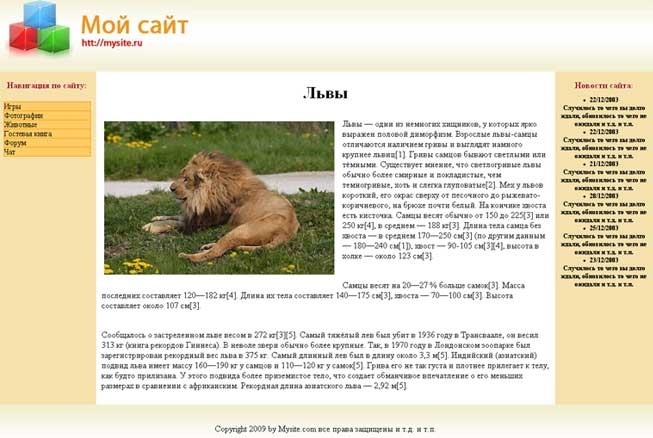
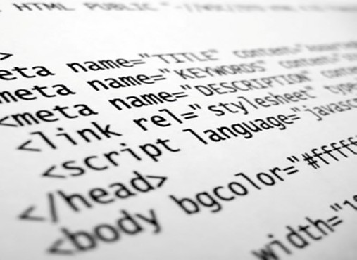

| Табличная HTML верстка сайта | ||
| Верстка - процесс создания и структурирования HTML-документов. | ||
| Примеры    | Для того, чтобы ваш сайт хорошо выглядел, нужно тщательно проработать дизайн макета страницы. Для начала нужно определиться, будет ли содержимое сайта находиться в общем блоке или будет поделено на несколько столбцов. Самым простым способом для создания макета сайта является тег table. С его помощью можно быстро разделить страницу на нужное вам количество строк и столбцов. |
 |